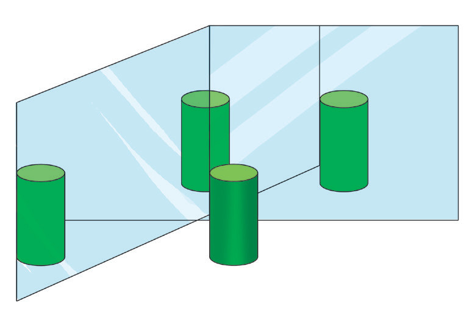

| Angle between the mirrors | Number of images |
|---|---|
| 90° | |
| 60° | |
| 45° | |
| 30° | |
| 0° |
Questions
From the explanation above, we can see that as the angle between the mirrors decreases, the number of images increases. As the angle between the mirrors approaches zero, the number of images approaches infinity. That is, there is a very large number of faint images. Parallel mirrors are commonly used in salons and barbershops.
Example 4.1
An object is placed 2 cm from a plane mirror. If the object is moved by 1 cm toward the mirror, what will be the new distance between the object and the image?
Solution
Given an initial distance of the object from the plane mirror = 2 cm and the object moves 1 cm toward the mirror: Then, the new distance of the object from the mirror = 2 cm − 1 cm = 1 cm. Since in a plane mirror, the image is formed at the same distance behind the